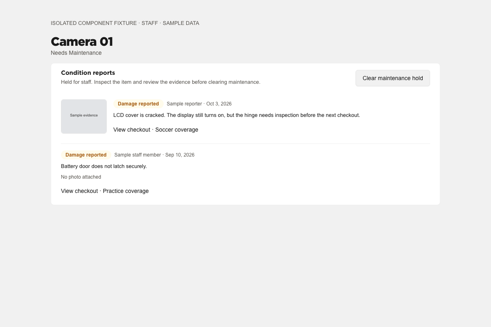
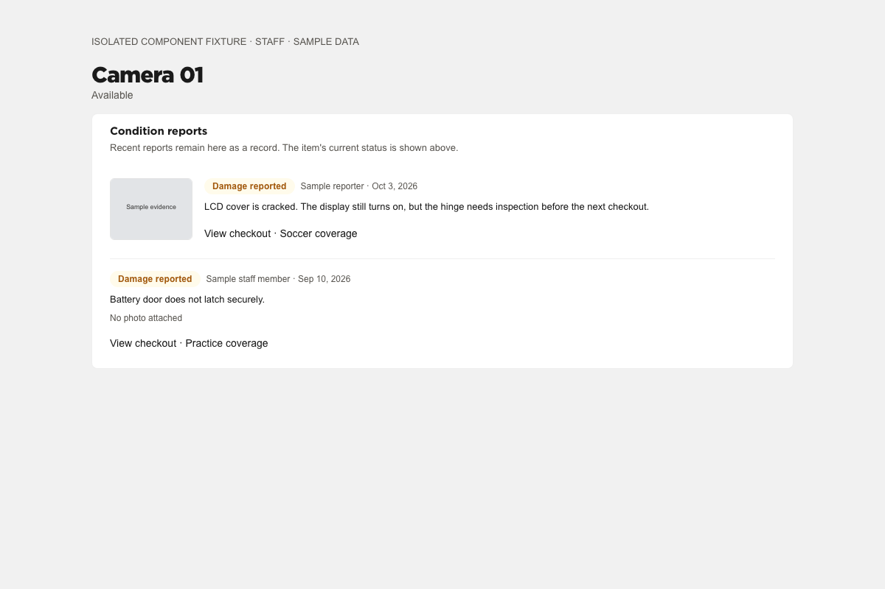
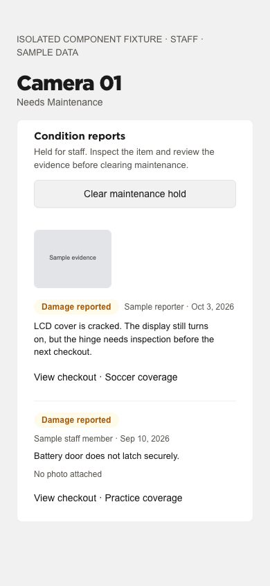

Wisconsin Creative · Local review · October 3, 2026
Reports now hold damaged gear consistently, preserve evidence, and give staff a clear place to inspect it before release.
Sample data rendered with the actual ItemConditionReports component and compiled application CSS. Desktop and narrow-width states were inspected. No trustworthy authenticated before capture was available; no comparison is claimed.
Web reports could save without a maintenance hold; damage could be submitted without evidence; old photos were deleted on replacement.
Report, hold, and audit commit together. Damage needs a description or photo, including retained evidence. Conflicting in-flight edits return a conflict, and old evidence remains accessible through audit.
Item detail did not expose the condition reports that explained the hold.
Staff/admin see up to five recent reports with evidence, reporter, date, and checkout links. Reports remain visible when the hold is cleared.
A blind toggle could reverse the intended state, and a stale inspection could miss new damage.
Item detail asks staff to confirm inspection and sends an explicit desired status against the item version they reviewed. New damage updates that version. Legacy bodyless callers remain compatible.


